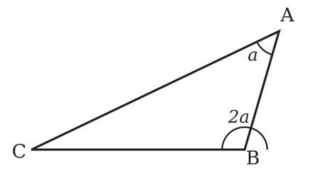

בסרטוט שלפניכם משושה משוכלל בו הועברו שישה אלכסונים שיצרו את הצורה שלפניכם.
לאור נתונים אלו ונתוני הסרטוט, מה יחס השטחים בין המשושה המשוכלל הפנימי הקטן (השטח האפור) שנוצר בעת העברת האלכסונים לבין המשושה המשוכלל הגדול?
הצגת הפתרון
התשובה הסופית3תשובה (3)1:3
דרך הפתרון והסבר
האלכסונים יוצרים מגן דוד, ובמרכזו משושה קטן. נחלק את המשושה הגדול למשולשים שווי צלעות קטנים, שצלעם כצלע המשושה הקטן:המשושה הקטן – 6 משולשים.ששת קודקודי המגן – 6 משולשים.ששת האזורים שבין המגן לצלעות המשושה הגדול – כל אחד בשטח של משולש קטן: 6.סך הכול: 18 משולשים.היחס בין המשושה הקטן לגדול:6 : 18 = 1 : 3(או: צלע המשושה הקטן היא s√3, ולכן יחס השטחים (1√3)² = 13.)
💡 הלקח
מגן דוד במשושה – סופרים משולשים קטנים; יחס שטחים = ריבוע יחס הצלעות.
🔁 דפוס חוזר: יחס שטחים = ריבוע יחס הצלעות צורות דומות: אורך פי k ⇐ שטח פי k², נפח פי k³. 📐 לדף הנוסחאות
צלע המשושה הפנימי היא s√3 – יחס השטחים הוא ריבוע יחס הצלעות.
נבדקהפתרון תואם את מפתח התשובות של הספר.
שאלה 2
בקבוצת הכדורסל "מכבי סל" ישנם 13 שחקנים שכל אחד מהם, קולע בעת משחק 21 נקודות בממוצע. המאמן שוקל לצרף לקבוצה את דובי גל שקולע בכל משחק בממוצע 35 נקודות. אם המאמן אכן יצליח לצרפו לקבוצה, מה יהיה מספר הנקודות הממוצע שקולע שחקן בקבוצת "מכבי סל"?
הצגת הפתרון
התשובה הסופית1תשובה (1)22
דרך הפתרון והסבר
סך הנקודות של 13 השחקנים:13 · 21 = 273עם דובי גל:273 + 35 = 308, ו־14 שחקנים.הממוצע החדש:30814 = 22
💡 הלקח
מצטרף שמעל הממוצע ב־d מעלה את הממוצע ב־d ÷ (מספר החדש).
🔁 דפוס חוזר: ממוצע משוקלל וסכומים עובדים עם סכומים (ממוצע × כמות) – לא מחברים ולא מחסרים ממוצעים.
מוקשים נפוצים
דרך מהירה: דובי מעל הממוצע ב־14, ומתחלק בין 14 שחקנים – הממוצע עולה ב־1.
נבדקהפתרון תואם את מפתח התשובות של הספר.
שאלה 3
נתון: |4x − y| = |4y − x|
איזו מהטענות הבאות נכונה בהכרח?
הצגת הפתרון
התשובה הסופית4תשובה (4)|x| = |y|
דרך הפתרון והסבר
שני ערכים מוחלטים שווים כשהביטויים שווים או נגדיים:מקרה א: 4x − y = 4y − x5x = 5y ⇒ x = yמקרה ב: 4x − y = −(4y − x) = −4y + x3x = −3y ⇒ x = −yבשני המקרים |x| = |y| ✓
💡 הלקח
ערכים מוחלטים שווים: הביטויים שווים או נגדיים – שני מקרים.
🔁 דפוס חוזר: ערך מוחלט|x| הוא המרחק של x מ־0. |x| = k ⇒ x = k או x = −k.
🔁 דפוס חוזר: דוגמה נגדית כדי לפסול "בהכרח" מספיקה דוגמה אחת. בודקים שליליים, 0 ושברים.
מוקשים נפוצים
x = −y גם פתרון – לכן לא בהכרח x = y.
נבדקהפתרון תואם את מפתח התשובות של הספר.
שאלה 4

בסרטוט שלפניכם משולש ABC בעל זווית קהה בגודל 2a.
בהסתמך על נתונים אלו ונתוני הסרטוט, איזו מבין האפשרויות הבאות יכולה להיות גודלה של זווית ACB?
הצגת הפתרון
התשובה הסופית1תשובה (1)½a
דרך הפתרון והסבר
הזווית ב־B היא 2a והיא קהה:2a > 90° ⇒ a > 45°סכום הזוויות במשולש 180°, ולכן ∢C =180° − a − 2a =180° − 3a, וחייב להיות חיובי:3a < 180° ⇒ a < 60°כלומר 45° < a < 60°. נבדוק כל תשובה:(1) ∢C = 12a: a + 2a + a2 =180° ⇒a =3607 ≈51.4° – בתחום ✓(2) ∢C = a: 4a = 180° ⇒ a = 45° – אז 2a = 90°, לא קהה ✗(3) ∢C = 1.5a: 4.5a = 180° ⇒ a = 40° – מחוץ לתחום ✗
💡 הלקח
זווית קהה (2a > 90°) ⇒ a > 45°; משלבים עם סכום הזוויות.
🔁 דפוס חוזר: משולשים מיוחדים משולש שווה צלעות: גובה s√32. במשולש 30-60-90 הניצב מול 30° הוא חצי היתר. 📐 לדף הנוסחאות
מוקשים נפוצים
התנאי "קהה" נותן a > 45° – בלעדיו גם (2) הייתה נראית אפשרית.
נבדקהפתרון תואם את מפתח התשובות של הספר.
שאלה 5
נתון: 0 < ab
ab < ba
מה מהבאים נכון בהכרח?
הצגת הפתרון
התשובה הסופית3תשובה (3)|a| < |b|
דרך הפתרון והסבר
ab > 0, ולכן מותר לכפול את אי־השוויון ב־ab בלי להפוך את הכיוון:ab · ab < ba · ab ⇒a² < b²לכן |a| < |b| ✓בדיקת (1) ו־(2):שניהם חיוביים: a² < b² ⇒ a < b – הפוך מ־(1) ✗שניהם שליליים: |a| < |b| ⇒ a > b – הפוך מ־(2) ✗
🔁 דפוס חוזר: שלילי הופך אי־שוויון כופלים או מחלקים במספר שלילי – הופכים את כיוון אי־השוויון.
🔁 דפוס חוזר: ערך מוחלט|x| הוא המרחק של x מ־0. |x| = k ⇒ x = k או x = −k.
מוקשים נפוצים
כפל בביטוי חיובי (ab) שומר על כיוון אי־השוויון.
נבדקהפתרון תואם את מפתח התשובות של הספר.
שאלה 6
במחשבון התקלקלו כל המקשים חוץ מהמקשים של הספרות 3 ו־7, מקש פעולת הכפל ומקש השוויון.
איזה מהמספרים הבאים אינו תוצאה אפשרית בעקבות סדרת פעולות במחשבון זה?
הצגת הפתרון
התשובה הסופית3תשובה (3)315
דרך הפתרון והסבר
המספרים שאפשר להקליד מורכבים מהספרות 3 ו־7 בלבד, ולכן הם מסתיימים ב־3 או ב־7.מספר כזה לא מתחלק ב־2 ולא ב־5.מכפלה של מספרים שלא מתחלקים ב־5 גם היא לא מתחלקת ב־5.נבדוק את התשובות:63 = 3 · 3 · 7 ✓ (3 × 3 × 7)147 = 3 · 7 · 7 ✓441 = 3 · 3 · 7 · 7 ✓315 = 3² · 5 · 7 – מתחלק ב־5, ולכן בלתי אפשרי ✗
💡 הלקח
מספרים מהספרות 3 ו־7 לא מתחלקים ב־5 – מחפשים גורם שאי אפשר לייצר.
🔁 דפוס חוזר: ספרות וערך מקום כותבים מספר לפי ערך המקום: 100a + 10b + c.
מוקשים נפוצים
לחפש גורם ראשוני שאי אפשר לייצר (כאן 5).
נבדקהפתרון תואם את מפתח התשובות של הספר.
שאלה 7
a הוא מספר ראשוני, b מספר טבעי.
כמה מחלקים חיוביים שונים יש לביטוי aᵇ · aᵇ⁻¹(aᵇ⁻¹)² ?
הצגת הפתרון
התשובה הסופית2תשובה (2)2
דרך הפתרון והסבר
נפשט עם חוקי חזקות:מונה: ab · ab−1 = a2b−1מכנה: (ab−1)² = a2b−2a2b−1a2b−2 = a¹ = aa ראשוני, ולכן יש לו בדיוק שני מחלקים חיוביים: 1 ו־a.
💡 הלקח
מפשטים לפני שסופרים מחלקים: הביטוי הוא a, ולראשוני 2 מחלקים.
🔁 דפוס חוזר: פירוק לגורמים ראשוניים מפרקים לגורמים ראשוניים – וכך רואים מה מחלק את המספר ומה חסר בו.
🔁 דפוס חוזר: בסיס משותף כותבים הכול כחזקות של אותו בסיס, ואז משווים מעריכים.
מוקשים נפוצים
לפשט לפני שסופרים מחלקים – הביטוי כולו הוא פשוט a.
נבדקהפתרון תואם את מפתח התשובות של הספר.
שאלה 8
במגרש מכוניות, ל־¼ מהמכוניות יש לוחית זיהוי בת 9 ספרות, ⅔ מהרכבים הם בצבע לבן, ל־⅙ מהרכבים יש גיר ידני ו־57 מהם יובאו מהמזרח.
מה מהבאים נכון בהכרח?
הצגת הפתרון
התשובה הסופית4תשובה (4)אף אחת מהתשובות אינה נכונה בהכרח
דרך הפתרון והסבר
שתי קבוצות נחתכות בהכרח רק אם סכום החלקים שלהן גדול מ־1 (אחרת אפשר לפזר אותן בלי חפיפה).נבדוק כל זוג:(1) גיר ידני ומהמזרח: 16 + 57 =742 + 3042 =3742 < 1 – לא בהכרח ✗(2) לבן וגיר ידני: 23 + 16 = 56 < 1 – לא בהכרח ✗(3) לוחית 9 ספרות ומהמזרח: 14 + 57 = 2728 < 1 – לא בהכרח ✗אף אחת לא בהכרח נכונה: תשובה (4).
💡 הלקח
שתי קבוצות נחתכות בהכרח רק אם סכום החלקים גדול מ־1.
🔁 דפוס חוזר: הכלה והפרדה א או ב = א + ב − (א וגם ב).
🔁 דפוס חוזר: דוגמה נגדית כדי לפסול "בהכרח" מספיקה דוגמה אחת. בודקים שליליים, 0 ושברים.
מוקשים נפוצים
שתי קבוצות נחתכות בהכרח רק אם סכום השברים גדול מ־1.
נבדקהפתרון תואם את מפתח התשובות של הספר.
שאלה 9
בסרטוט שלפניכם חמישה מעגלים בעלי אותו מרכז. רדיוסו של המעגל הפנימי ביותר הוא 2 ס"מ. רדיוסו של כל מעגל החוסם מעגל אחר גדול ממנו ב־2 ס"מ.
🔁 דפוס חוזר: גזרות וקטעי מעגל גזרה = θ360 · πr². קטע מעגל = גזרה − משולש. טבעת = π(R² − r²). 📐 לדף הנוסחאות
מוקשים נפוצים
שטח טבעת = π(R² − r²) – לא π(R − r)².
נבדקהפתרון תואם את מפתח התשובות של הספר.
שאלה 10
על המדף בארונה של יעל 7 ספרים שונים. בכמה דרכים שונות היא יכולה לסדר אותם אם חשוב לה ששני הכרכים של הארי פוטר יהיו צמודים זה לזה?
הצגת הפתרון
התשובה הסופית3תשובה (3)2 × 6!
דרך הפתרון והסבר
שני כרכי הארי פוטר צמודים – נתייחס אליהם כיחידה אחת.5 ספרים + יחידה אחת = 6 יחידות: 6! סידורים.בתוך היחידה, שני הכרכים יכולים להיות בשני סדרים:2סך הכול:2 × 6!
💡 הלקח
פריטים צמודים = יחידה אחת, כפול הסידורים בתוכה (2!).